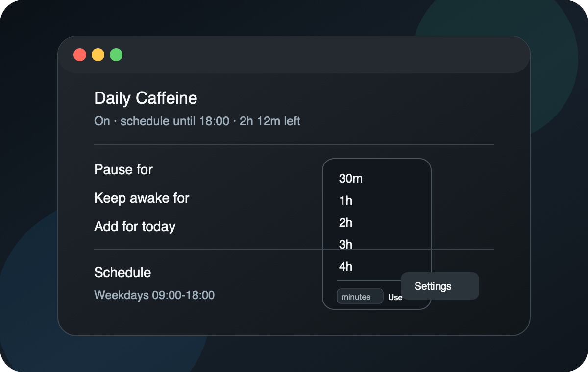

Daily schedule
Choose active days, start and end times, and an optional break window from the macOS settings panel.
Daily Caffeine keeps a Mac awake during working hours, supports temporary pauses, and lets you add time to today's schedule without changing the recurring limit.

Choose active days, start and end times, and an optional break window from the macOS settings panel.
Add time to today's schedule end, useful when the recurring limit stays fixed but one day needs more time.
Pause or keep awake for preset durations from 30 minutes through 8 hours, with remembered custom minutes inline.
The app is distributed as a zipped macOS app bundle from GitHub Releases. The repository and release are private; access requires GitHub permissions.